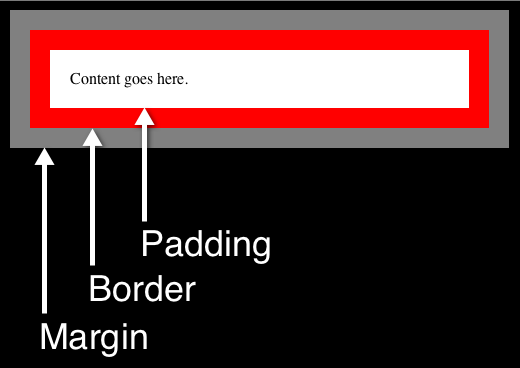
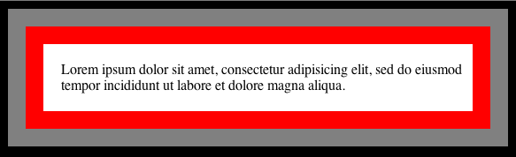

Margins, Borders, and Padding! Oh My!
Margins, borders, and padding are all properties in CSS that can help with creating white space as well as the overall layout on your web site. Oftentimes, you can achieve the same result by manipulating one over the other, though, so what's the big difference between the three? Let's try to differentiate all three as simply as possible.
Let's first start with understanding the CSS box model because it'll help us figure out the differences between the three properties - margin, border, and padding.

So, as you can see, the box model shows us that the content, be it text or image or whatever you want, is surrounded by the padding which is then surrounded by the border which is finally surrounded by the margin. Simple enough, right? Well, let's look into each element a bit further.
Starting from the inside and working our way out, we'll first look at the padding property. The padding property in CSS allows you to determine the space between the content and the border. For example, if you have a paragraph and set the margin of the div containing it to 10px, the space between the text in the paragraph and the border will be 10px. Also, you can set the padding of all sides equally, or you can set each side's padding. You can either do it by setting the padding-top, padding-left, etc. individually. You can also do it by writing it like this - "padding: 10px 20px 10px 20px;" - and this will set the top to 10px of padding, the right to 20px, etc. around the box in a clockwise fashion.
Now, let's take a look at the borders! The border can be set to be a certain size, a certain color, and also a certain style. You use the border to frame the content visually, and you would write it out like this - "border: 25px solid red;" This would give you the following result:

Play with the different styles like solid, dotted, groove, etc. as well as the size and color of your borders to make your site look more appealing.
Finally, let's take a lok at the margins. The margin is transparent, but it determines the space between the box/div/selector and the surrounding elements on the page. So, for example, if you give a box containing text a margin of 200px, it will have white space (referred to as white space, but it's whatever your background is) on all sides of 200px. That'd be a crazy margin, but you get the picture. You set the margin similar to the padding (e.g. "margin: 1px 2px 3px 4px;" would be 1 on the top, 2 on the right, etc. around the box clockwise). Also like the padding, you can set them individually by margin-left, margin-right, etc.
Well, that's about it. You now know that padding and margin set the space within and outside the border respectively, and you also know you can customize the border too to make your site easier on the eyes. Find what combo works best for your site. Good luck!